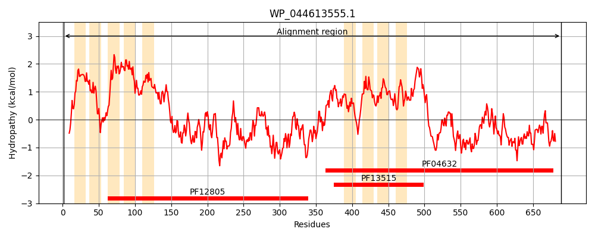
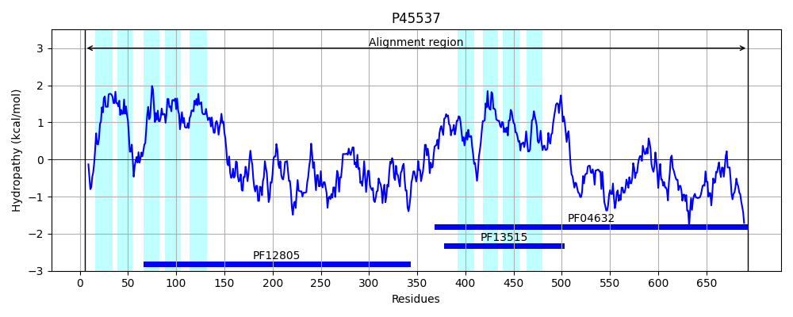
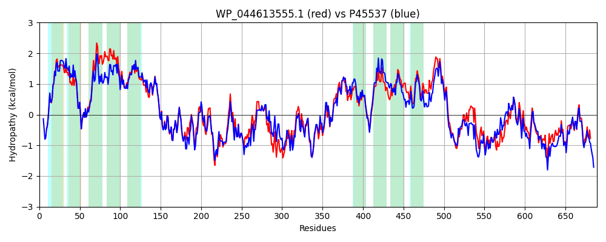

Hit Accession: P45537
Hit TCID: 2.A.85.1.3
Hit Description: gnl|BL_ORD_ID|10573 gnl|TC-DB|P45537|2.A.85.1.3 Uncharacterized protein yhfK OS=Escherichia coli (strain K12) GN=yhfK PE=3 SV=2
Mach Len: 689
e:0.000000
Query TMS Count : 9
Hit TMS Count: 9
TMS-Overlap Score: 7.550000
Predicted Substrates:None
BLAST Alignment:
Score: 3007 , Bit scores: 1162 bits, E-value: 0.0e+00, Alignment length: 689, Percentage identity: 81
Query: 1 MWRRLIYHPEVNYALRQTLVLCLPVAIGLLLGHLQQGLLFSLVPACCNIAGLDTPHKRFFKRLIIGGCLFAGCSLVVQLLLAQAIPLPLILSGLALLLGVTAEISSLHARLLPASLIAAIFTLSLAGNMPIWEPLLIYAFGTLWYGVFNWLWFWLWREQPLRESLSLLYRELADYCEAKYSLLTQHTDPSTALPPLLTRQQKVVDLITQCYQQMHMLAANQRNDHKRLLRAFQVGLDLQEHISVSLHQPEEVQKLVERSHAEAVIRWNAQTVAARLRVLADDILYHRFPQRFQMDKQIEALEKIARQHPDNPVGQFCAWHFSRIARVLHTQRPLYARDLMADKERRLPLFPALKNYLSLKSPALRNAARISVMLSVASLMGNALHLPKPYWILMTVLFVTQNGYGATRVRIVHRAAGTLAGLVIAGLTLHFHVPESYTLSGMLLITLLSYLIIRKHYGWAMVGFTVTAVYTLQLLTLNGEQFIIARLIDTLIGCLIAFGGMVWLWPQWQSGLLKKNAHDALEADQQAIRLILSADPKAPALAYQRMRVNQAHNALYNSLNQAMQEPGFNTHYLEDMKLWVTHSQFIVEHINAMTTLAREHTMLTPDLAQRYLESCEIALQRCQQRLDSDGPGSAGDANILESPETEVPNGPLSTLEQHLQRILGHLNTMHTISSVAWRQRPHHGIWLRK 689
MWRRLIYHP++NYALRQTLVLCLPVA+GL+LG L+ GLLFSLVPACCNIAGLDTPHKRFFKRLIIG LFA CSL+ QLLLA+ +PLP +L+GL L+LGVTAE+ LHA+LLPASL+AAIFTLSLAG MP+WEPLLIYA GTLWYG+FNW WFW+WREQPLRESLSLLYRELADYCEAKYSLLTQHTDP ALPPLL RQQK VDLITQCYQQMHML+A D+KR+LR FQ LDLQEHISVSLHQPEEVQKLVERSHAE VIRWNAQTVAARLRVLADDILYHR P RF M+KQI ALEKIARQHPDNPVGQFC WHFSRIARVL TQ+PLYARDL+ADK+RR+PL PALK+YLSLKSPALRNA R+SVMLSVASLMG ALHLPK YWILMTVL VTQNGYGATR+RIV+R+ GT+ GL+IAG+ LHF +PE YTL+ ML+ TL SYLI+RK+YGWA VGFT+TAVYTLQLL LNGEQ+I+ RLIDT+IGCLIAFGG VWLWPQWQSGLL+KNAHDALEA Q+AIRLILS DP+ LA+QRMRVNQAHN LYNSLNQAMQEP FN+HYL DMKLWVTHSQFIVEHINAMTTLAREH L P+LAQ YL+SCEIA+QRCQQRL+ D PGS+GDANI+++PE + G TLEQHLQR++GHLNTMHTISS+AWRQRPHHGIWL +
Sbjct: 5 MWRRLIYHPDINYALRQTLVLCLPVAVGLMLGELRFGLLFSLVPACCNIAGLDTPHKRFFKRLIIGASLFATCSLLTQLLLAKDVPLPFLLTGLTLVLGVTAELGPLHAKLLPASLLAAIFTLSLAGYMPVWEPLLIYALGTLWYGLFNWFWFWIWREQPLRESLSLLYRELADYCEAKYSLLTQHTDPEKALPPLLVRQQKAVDLITQCYQQMHMLSAQNNTDYKRMLRIFQEALDLQEHISVSLHQPEEVQKLVERSHAEEVIRWNAQTVAARLRVLADDILYHRLPTRFTMEKQIGALEKIARQHPDNPVGQFCYWHFSRIARVLRTQKPLYARDLLADKQRRMPLLPALKSYLSLKSPALRNAGRLSVMLSVASLMGTALHLPKSYWILMTVLLVTQNGYGATRLRIVNRSVGTVVGLIIAGVALHFKIPEGYTLTLMLITTLASYLILRKNYGWATVGFTITAVYTLQLLWLNGEQYILPRLIDTIIGCLIAFGGTVWLWPQWQSGLLRKNAHDALEAYQEAIRLILSEDPQPTPLAWQRMRVNQAHNTLYNSLNQAMQEPAFNSHYLADMKLWVTHSQFIVEHINAMTTLAREHRALPPELAQEYLQSCEIAIQRCQQRLEYDEPGSSGDANIMDAPEMQPHEGAAGTLEQHLQRVIGHLNTMHTISSMAWRQRPHHGIWLSR 693 | Protein Hydropathy Plots: |
|---|
|  |  |
Pairwise Alignment-Hydropathy Plot:
|
|---|
|  |